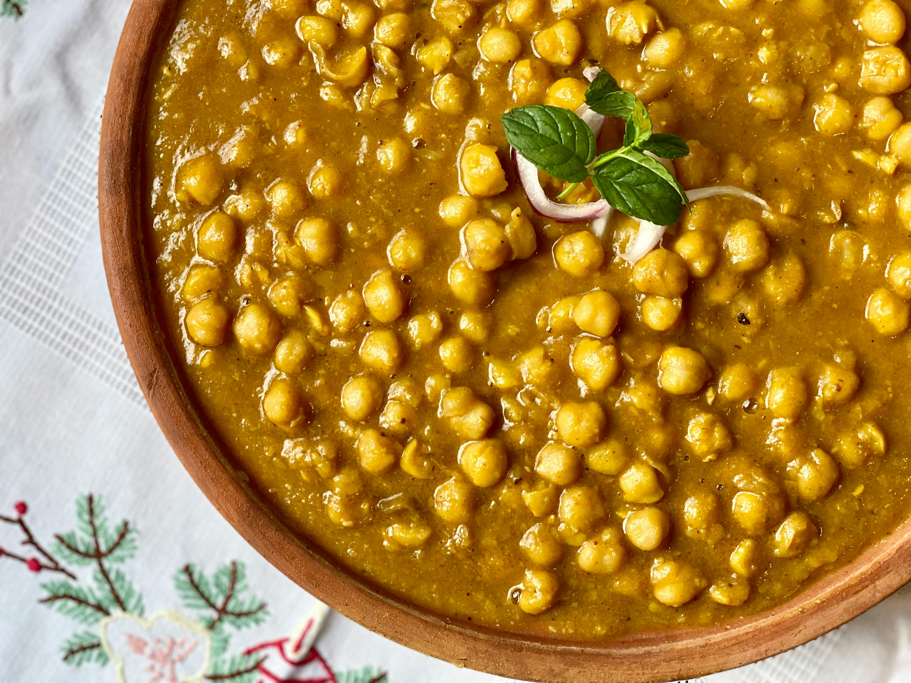

Chickpea-Curry

Ingredients
- 2 small cans or 1 large can of chickpeas
- 1 can of diced tomatoes
- 1 can of coconut milk
- 1 onion
- 2-3 cloves of garlic
- 120g rice or couscous
- A splash of lime or lemon concentrate
- 1 teaspoon coriander
- 1 teaspoon cumin
- 2 teaspoons curry powder
- A pinch of cinnamon
- Sambal Oelek
- Salt
Steps
- Start by cooking the rice.
- While the rice is cooking, chop the onion and sauté it with the pressed garlic until translucent.
- Add the spices and briefly fry them with the onions.
- Then add the diced tomatoes and coconut milk and let everything simmer for a short time.
- Rinse the chickpeas and add them to the pot.
- Let everything simmer for about 10 minutes. Then add a splash of lime or lemon concentrate, salt, and Sambal Oelek to taste.
- By now, the rice should be done.
And that's it, enjoy your meal!
Home